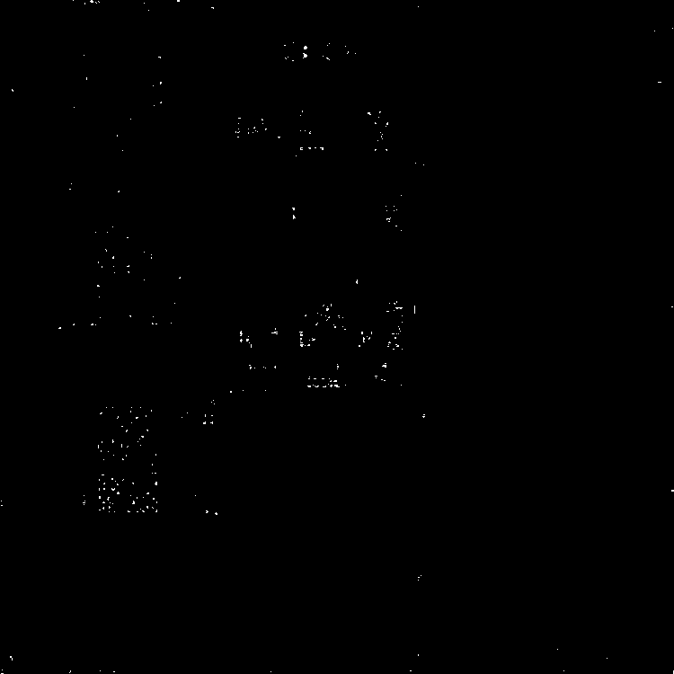
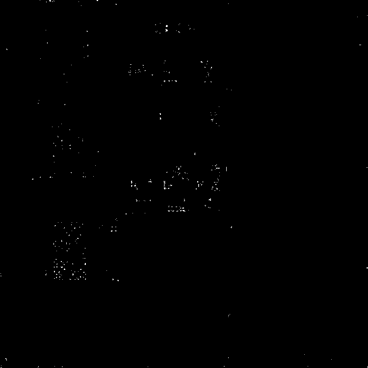

Name: Rongsheng Qian
Student No: 301449387
Date: Feb 11 2023
I have not cheated in any way when doing this assignment, I did it on my own. I may have asked questions about the assignment on Piazza, I know that’s totally fine and even encouraged. I also already know that this class is graded on a curve. I realize that if I cheat and by some miracle not get caught, any increase in my grade will in turn shift the curve and result in lower grades for my classmates. Any undeserved extra grade would come at the cost of all others. That’s horrible! I would never do it.


 

By comparing your FAST and FASTR visualizations, the noise was discarded after thresholded = 0.001. For set 1 the noise in the sink was dicarded. For set 2 the noise on the floor and pillar was discarded. The average computation time of FAST is 4s. and the average computation time of FASTR is 4(FAST) + 0.1s(Harris).
First three sets use 'Freak', and the last one use 'SURF'. These two sets that I chose to show above typically show the difference between two feature decription methods. 'SURF' can match more features but have less accurate. 'Freak' is the opposite of it. 'ORB' is relaticely crude.
I used 'Freak' in the first set above, becasue it is more accurate, which can exclude the noise. If I use the 'SURF' for the first set above with ('confidence', 99, 'MaxNumTrials', 2000.), the keypoints on the edge of the elevator will be counted and pointed to the wall and button, which will cause the programe crash and picture torsion. I used 'SURF' in the second set above with ('confidence', 99, 'MaxNumTrials', 2000.), cuz the keypoints isn't enough so I need to use 'SURF' to match more feature, otherwise the picture cannot be matched and transform becasue the keypoints are not enough.
For the difference between using FAST and FASTR points, we can match more keypoints in FAST than FASTR for all of four sets.

Thank to 'Freak'. Both of the optimal RANSAC parameters for FASTR and FAST are 'confidence', 99, 'MaxNumTrials', 2000. They look the same good. At the same time, I find out the Panoramas will be brocken or increditably warped if I lower down the value of 'confidence' during several test. So confidence = 99 is the optimal option for these 4 set. The only difference happened on set 4. 'confidence', 99, 'MaxNumTrials', 2000 works on the FAST with 'Freak' well, however it doesn't work on FASTR due to the shortage of the keypoints. So I change the descriptor to 'SURF'.